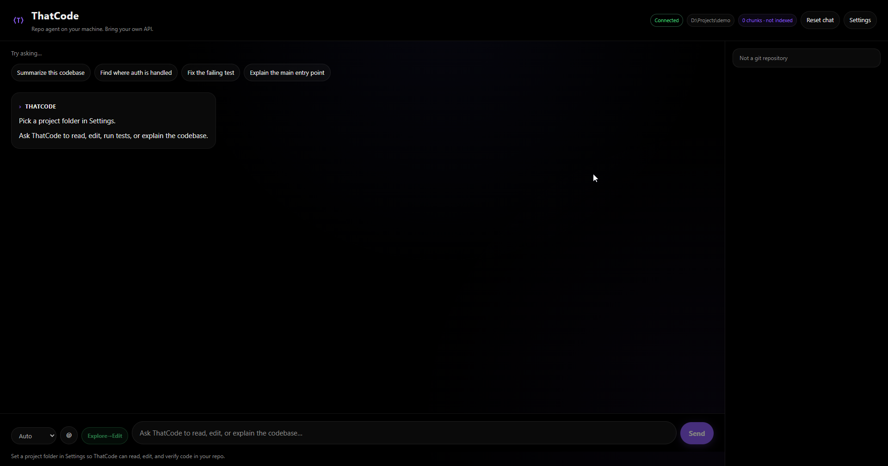

Workspace agent
Read, edit, grep, and run tests inside your project folder.
Repo agent on your machine. Bring your own API.
v2.7.1 · Windows · local-first · open sourceRead, edit, grep, and run tests inside your project folder.
Unified diffs with revert per file or per hunk.
Attach files, folders, symbols, or @codebase RAG chunks.
OpenAI-compatible — cloud or Ollama. Keys stay on device.
